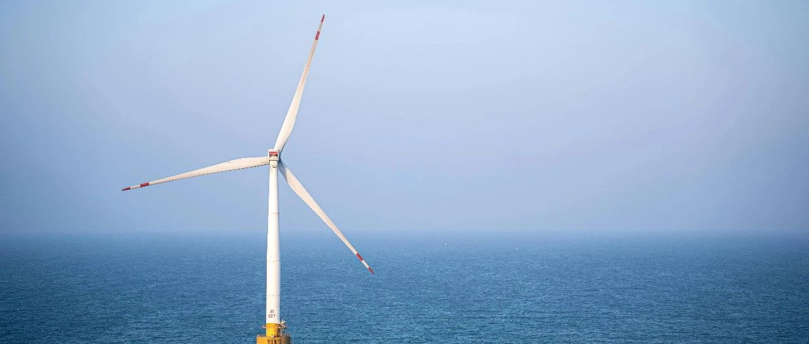

终局之战到来~
标普500、纳指100、纳指都创下新历史了。
我看了下持仓的个股，消费股板块普遍微跌，生物医药板块涨跌不一，联合健康继上一个交易日大幅上涨后又大幅下跌，整体做T的区间就是300以内买入，318/320以上T出。
伯克希尔下跌1.73%，相比我卖出时已跌去8.5%左右，但又没有到加仓买入的心动点位，68万以内才会考虑。
VISA微跌，没什么操作节点，就拿着等机会。
科技股板块，Meta跌回713美元，我目前成本174美元，预计750后才会再考虑减仓5%;
苹果站上212美元，但后续214-221之间，又是一个密集成交区，形成阻力位。
台积电站上233美元，我设置的232节点减仓5%被触发，目前成本已经很低，几乎可以忽略不计。
感谢这一轮下跌带来的机会，我很多的个股都逢低买入，逢高减仓部分，做成了低成本，后续就可以一直拿在手上做资产，无惧涨跌。
英伟达、博通、AMD、微软这些，都涨得不错，我已经是低成本/负成本，不需要有任何操作。
亚马逊和谷歌，后续还有一些做T的部分没减仓完，等亚马逊站上225，谷歌站上186以后，再把这些做T部分的卖掉，这一轮抄底买进来的底仓，成本就会低到两位数。
我这种交易策略，放在兵法中就属于大军稳步推进，积小胜为大胜，稳扎稳打，步步为营。没什么惊艳的地方，但最后往往能控住风险，吃到较高收益。
交易策略和流派，高举高打的高杠杆技术流或许会像霍去病“特种兵”一样惊艳四座，但我个人欣赏的，反而是李靖和韩信这类稳扎稳打、偶有奇谋的做派。
不败将军比常胜将军难。
这一轮下跌再修复，清洗了很多“技术派”的特种兵，也一波流带走了很多做期权的。
这些之前都强调过要谨慎，做投资要有平常心，要克制自己的欲望和贪婪，要遵守好自己的投资纪律。
特斯拉股价大起大落，特别妖，目前很难把握，非要有做T节点的话，大概是280-285左右入，320-325左右出。不过我没打算去碰。
大饼最近也波动较大，但基本上能稳定在9.8-10.8万美元左右，我量化还在跑，收益还行。看不太懂，就没打算做空或做多了，量化先跑一跑，赚点零花钱。
汇率方面，目前基本上在7.16-7.18之间。我看了一下人民币指数，跌幅较大，相对美元以外的24个主要货币，跌幅平均在8-10%，但相对美元反而略有升值。
说白了，其实还是在隐蔽性贬值，至于和美元价格，预计会在贸易战结果明确后出结果，我个人预计会在7.5左右。
目前是7.35这条线，每次无形的大手都会出手拉回来。
贸易战整体的发展趋势，和我个人预期的一致，没有太大偏差。
欧盟和日本、印度虽然在挣扎，但最终的结果大概率是妥协，因为没有什么拿得出手的东西去谈。
越南则已经和老美达成了关税协议，川普表示:美国将对进口越南商品征收20%关税，并对通过越南转运输美的其他国家商品征收40%关税;而越南将对美国“完全开放市场”，美国企业能以零关税向越南销售产品。
老美参议院51:50通过了“大而美”法案，只差众议院还没通过。“大而美法案”受瞩目，主要内容有:
将2017年发布的《减税与就业法案》中的减税措施永久化;小费和加班费免税;社会福利安全免税;扩大儿童的税收抵免额度;为制造业和工厂建设提供税收优惠。
核心就两个:一是减税，二是减支。
减税在短期内会减少老美财政收入，而减支会影响他人利益。又要减少收入，又要减少支出，二者同时并行，都是得罪人的活。
但其实如果能因此吸引到更多的企业到老美发展，把蛋糕做得更大，收益反而会增加。
只不过，老美的减支原本预计是4.5万亿美元，经多方妥协后降为1.5万亿美元，还是大于当初的预期。
这也是马斯克和川普最大的分歧。
马斯克认为，应该一下子执行到位，一口吃成一个胖子，4.5万亿减支应该立马做到。当初他执掌DOGE，想执行万亿减支计划，结果只减了1500亿美元，就被他认定为失败。
川普则经过第一个任期洗礼，成熟了许多，认为减税这玩意应该循序渐进，饭要一口一口吃，最终吃成胖子。
“大而美”法案的最大隐患，是如果高端制造业未能回流老美，减税这玩意还在推行，那么就会留下很大的财政窟窿，甚至有失控的风险。
对于中期和长期来说，这法案的风险不低。
但好处也是巨大的，如果高端制造业能回流老美，那一切形成正循环，老美未来20年又会进入新一轮经济良性发展期。
而高端制造业要回流老美，首要的对手就是咱们。这法案落地，从某种层面来说，有点类似于终局之战到来。
后续，老美和川普会有很多的措施冲着咱们来。
咱们能做的，就是把外部关系搞好，多团结朋友，把生意做大;把内部营商环境和民生搞好，爱民惜财，强壮自身筋骨。
咱们看人时，一般主要看对方的心力、认知、格局、心态。
投资也一样，普通人做投资，讲究人和、势（大势/趋势）对、时值。
想要进步，就多经历（在事中练），遇到困难不逃避，多总结。这一轮下跌再修复，需要直面自己的不足和性格短板，深刻剖析自己，才能有所进步。
准备出发了，其他的也不知道说啥。
就这样吧。
免责声明：本人提供的信息仅供参考，不构成投资建议。本人的交易不代表任何立场；投资者应根据自身财务状况、投资目标等情况自主做出投资决策并承担投资风险。投资有风险，入市需谨慎。